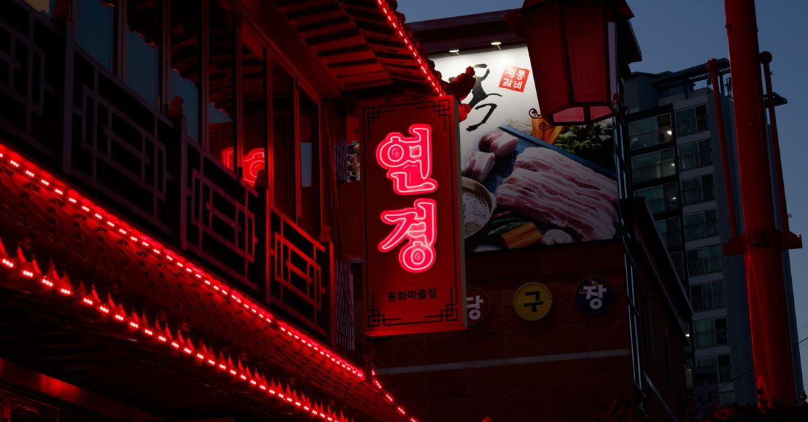

21:45
抵達仁川機場第一航廈 → 仁川住宿

인천광역시 중구 신포로46번길 6, #F2住宿地點 Naver Map ↗
交通通關、領行李後，從1樓入境大廳搭計程車前往住宿 仁川市中區新浦市場一帶（約35–40分鐘）。深夜帶著行李，這樣最省事。
介紹台灣護照到 2026/12/31 前免申請 K-ETA，只要填入境卡。住宿位於新浦國際市場與開港場周邊，第2天走路就能開始行程。
吃與買在機場便利商店（CU、GS25、7-Eleven）買 T-money 交通卡並儲值，順便買宵夜和水。
備案如果班機延誤，直接入住就好，不影響第2天。